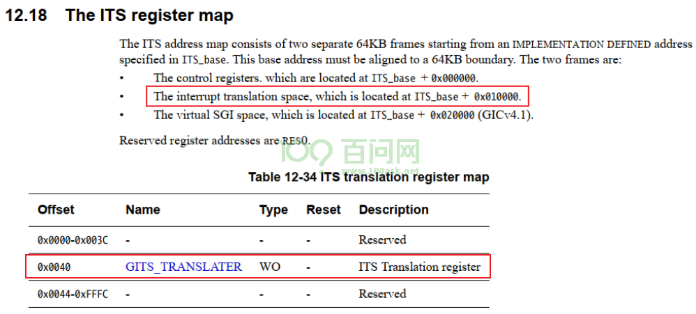
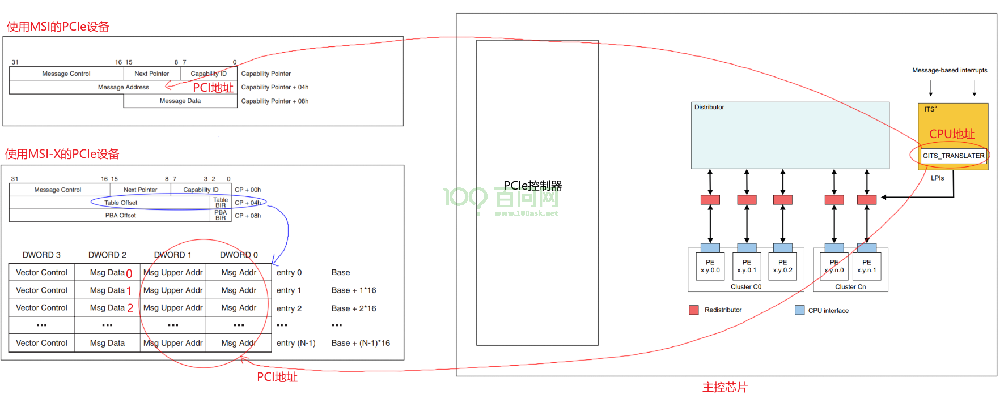
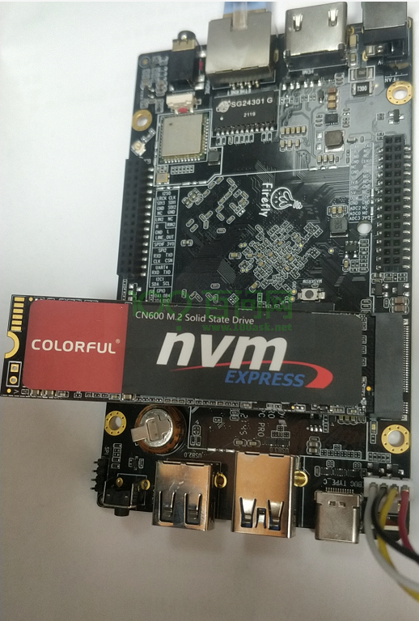
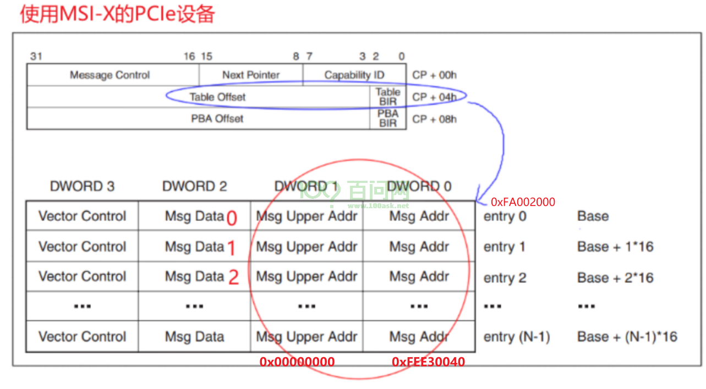
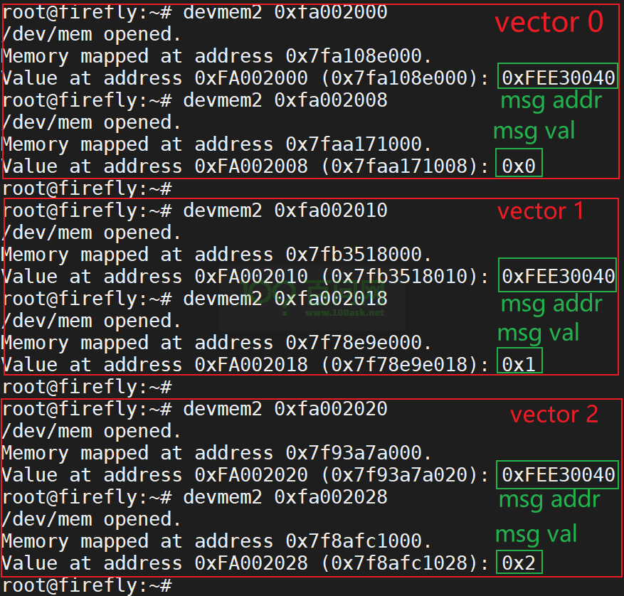
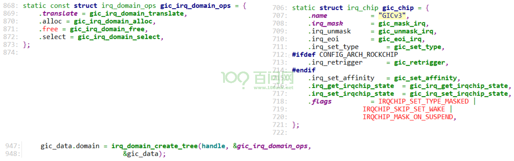
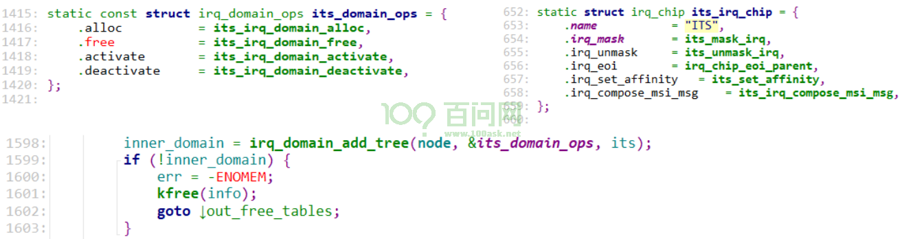
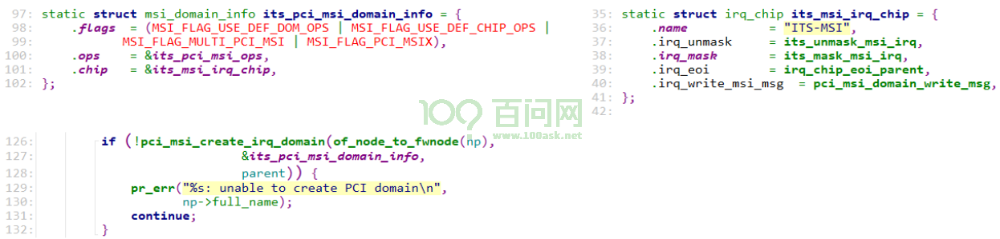

14_MSI_MSI-X中断之体验与使用#
MSI_MSI-X中断之体验与使用#
开发板资料：
https://wiki.t-firefly.com/zh_CN/ROC-RK3399-PC-PLUS/
参考内核文件：
Documentation\PCI\MSI-HOWTO.txtdrivers\pci\host\pcie-rockchip.cdrivers\nvme\host\pci.cdrivers\irqchip\irq-gic-v3.cdrivers\irqchip\irq-gic-v3-its.cdrivers\irqchip\irq-gic-v3-its-pci-msi.c
1. 怎么发出MSI/MSI-X中断#
PCIe设备向发出中断，它发出TLP包，往某个地址写入某个数据即可：
往哪个地址？GICv3 ITS的GITS_TRANSLATER寄存器，TLP包里使用的是PCI地址
写什么数据？0、1、2、……，要发出第1个中断时写0，要发出第2个中断时写1，……
在设备树文件rk3399.dtsi中，可以看到ITS的基地址是0xfee20000：
its: interrupt-controller@fee20000 {
compatible = "arm,gic-v3-its";
msi-controller;
reg = <0x0 0xfee20000 0x0 0x20000>;
};
在IHI0069G_gic_architecture_specification.pdf中有ITS寄存器的偏移地址：

GITS_TRANSLATER寄存器的CPU地址是：0xfee20000 + 0x010000 + 0x0040 = 0xfee30040。
对应的PCI地址也是0xfee30040(驱动程序里为例方便，故意使得CPU地址跟PCI地址相同，这2个地址属于不同地址空间)，
所以下图中PCI地址都是0xfee30040。

1.1 在RK3399上体验#
我们使用RK3399开发板，插上了NVMe SSD固态硬盘。

1.1.1 安装工具#
请给RK3399刷入Ubuntu映像文件，然后在开发板上执行：
udhcpc # 获取IP
apt update # 更新源
apt install pciutils # 安装lspci工具
apt install devmem2 # 安装devmem2工具
1.1.2 查看设备MSI-X信息#
执行lspci -vvv，得到如下信息：
01:00.0 Non-Volatile memory controller: Silicon Motion, Inc. Device 2263 (rev 03) (prog-if 02 [NVM Express])
Subsystem: Silicon Motion, Inc. Device 2263
Control: I/O- Mem+ BusMaster+ SpecCycle- MemWINV- VGASnoop- ParErr- Stepping- SERR- FastB2B- DisINTx+
Status: Cap+ 66MHz- UDF- FastB2B- ParErr- DEVSEL=fast >TAbort- <TAbort- <MAbort- >SERR- <PERR- INTx-
Latency: 0
Interrupt: pin A routed to IRQ 231
Region 0: Memory at fa000000 (64-bit, non-prefetchable) [size=16K]
Capabilities: [40] Power Management version 3
Flags: PMEClk- DSI- D1- D2- AuxCurrent=0mA PME(D0-,D1-,D2-,D3hot-,D3cold-)
Status: D0 NoSoftRst+ PME-Enable- DSel=0 DScale=0 PME-
Capabilities: [50] MSI: Enable- Count=1/8 Maskable+ 64bit+
Address: 0000000000000000 Data: 0000
Masking: 00000000 Pending: 00000000
Capabilities: [70] Express (v2) Endpoint, MSI 00
DevCap: MaxPayload 128 bytes, PhantFunc 0, Latency L0s unlimited, L1 unlimited
ExtTag- AttnBtn- AttnInd- PwrInd- RBE+ FLReset+ SlotPowerLimit 0.000W
DevCtl: Report errors: Correctable- Non-Fatal- Fatal- Unsupported-
RlxdOrd+ ExtTag- PhantFunc- AuxPwr- NoSnoop- FLReset-
MaxPayload 128 bytes, MaxReadReq 512 bytes
DevSta: CorrErr- UncorrErr- FatalErr- UnsuppReq- AuxPwr+ TransPend-
LnkCap: Port #0, Speed 8GT/s, Width x4, ASPM L1, Exit Latency L0s <1us, L1 <8us
ClockPM+ Surprise- LLActRep- BwNot- ASPMOptComp+
LnkCtl: ASPM Disabled; RCB 64 bytes Disabled- CommClk-
ExtSynch- ClockPM- AutWidDis- BWInt- AutBWInt-
LnkSta: Speed 2.5GT/s, Width x4, TrErr- Train- SlotClk+ DLActive- BWMgmt- ABWMgmt-
DevCap2: Completion Timeout: Range ABCD, TimeoutDis+, LTR+, OBFF Not Supported
DevCtl2: Completion Timeout: 50us to 50ms, TimeoutDis-, LTR-, OBFF Disabled
LnkCtl2: Target Link Speed: 8GT/s, EnterCompliance- SpeedDis-
Transmit Margin: Normal Operating Range, EnterModifiedCompliance- ComplianceSOS-
Compliance De-emphasis: -6dB
LnkSta2: Current De-emphasis Level: -3.5dB, EqualizationComplete-, EqualizationPhase1-
EqualizationPhase2-, EqualizationPhase3-, LinkEqualizationRequest-
Capabilities: [b0] MSI-X: Enable+ Count=16 Masked-
Vector table: BAR=0 offset=00002000
PBA: BAR=0 offset=00002100
Capabilities: [100 v2] Advanced Error Reporting
UESta: DLP- SDES- TLP- FCP- CmpltTO- CmpltAbrt- UnxCmplt- RxOF- MalfTLP- ECRC- UnsupReq- ACSViol-
UEMsk: DLP- SDES- TLP- FCP- CmpltTO- CmpltAbrt- UnxCmplt- RxOF- MalfTLP- ECRC- UnsupReq- ACSViol-
UESvrt: DLP+ SDES+ TLP- FCP+ CmpltTO- CmpltAbrt- UnxCmplt- RxOF+ MalfTLP+ ECRC- UnsupReq- ACSViol-
CESta: RxErr- BadTLP- BadDLLP- Rollover- Timeout- NonFatalErr-
CEMsk: RxErr- BadTLP- BadDLLP- Rollover- Timeout- NonFatalErr+
AERCap: First Error Pointer: 00, GenCap+ CGenEn- ChkCap+ ChkEn-
Capabilities: [158 v1] #19
Capabilities: [178 v1] Latency Tolerance Reporting
Max snoop latency: 0ns
Max no snoop latency: 0ns
Capabilities: [180 v1] L1 PM Substates
L1SubCap: PCI-PM_L1.2+ PCI-PM_L1.1+ ASPM_L1.2+ ASPM_L1.1+ L1_PM_Substates+
PortCommonModeRestoreTime=10us PortTPowerOnTime=10us
L1SubCtl1: PCI-PM_L1.2- PCI-PM_L1.1- ASPM_L1.2- ASPM_L1.1-
T_CommonMode=0us LTR1.2_Threshold=0ns
L1SubCtl2: T_PwrOn=10us
Kernel driver in use: nvme
从上述信息可以看到：
Region 0: Memory at fa000000 (64-bit, non-prefetchable) [size=16K]
Capabilities: [b0] MSI-X: Enable+ Count=16 Masked-
Vector table: BAR=0 offset=00002000
PBA: BAR=0 offset=00002100
这表示：
MSI-X: Enable+：使用MSI-X功能
Vector table: BAR=0 offset=00002000：MSI的向量在BAR 0偏移地址0x00002000处
Region 0: Memory at fa000000：
BAR 0的PCI地址是0xfa000000，
驱动程序里为了方便令CPU地址等于PCI地址，所以BAR的CPU地址也是0xfa000000。
我们可以去读取 0xfa000000 + 0x00002000开始的向量表，验证里：
msg addr为0xfee30040
msg data为0、1、……

1.1.3 验证MSI-X信息#

2. 怎么使用MSI/MSI-X#
参考内核文档：Documentation\PCI\MSI-HOWTO.txt、drivers\nvme\host\pci.c
主要函数是这2个:
int pci_enable_msix_range(struct pci_dev *dev, struct msix_entry *entries,
int minvec, int maxvec);
int pci_enable_msi_range(struct pci_dev *dev, int minvec, int maxvec);
示例代码如下：
// 分配 msix_entry 数组，每一数组项用来保存一个中断的信息
dev->entry = kzalloc_node(num_possible_cpus() * sizeof(*dev->entry),
GFP_KERNEL, node);
// 先尝试使用MSI-X
vecs = pci_enable_msix_range(pdev, dev->entry, 1, nr_io_queues);
if (vecs < 0) {
// 再尝试使用MSI
vecs = pci_enable_msi_range(pdev, 1, min(nr_io_queues, 32));
if (vecs < 0) {
vecs = 1;
} else {
for (i = 0; i < vecs; i++)
dev->entry[i].vector = i + pdev->irq;
}
}
// request_irq: 中断号都保存在dev->entry[i].vector里
for (i = 0; i < vecs; i++)
request_irq(dev->entry[i].vector, ...);
注意，在pci_enable_msix_range或者pci_enable_msi_range函数中：
minvec从1开始
对于pci_enable_msix_range，中断号保存在entries[i].vector里
对于pci_enable_msi_range，第1个中断号保存在pdev->irq里
3. MSI/MSI-X中断源码分析#
3.1 IRQ Domain创建流程#
从PCI设备触发，涉及三个IRQ Domain：
drivers\irqchip\irq-gic-v3-its-pci-msi.cdrivers\irqchip\irq-gic-v3-its.cdrivers\irqchip\irq-gic-v3.c
3.1.1 GIC#
设备树：
gic: interrupt-controller@fee00000 {
compatible = "arm,gic-v3";
#interrupt-cells = <4>;
#address-cells = <2>;
#size-cells = <2>;
ranges;
interrupt-controller;
reg = <0x0 0xfee00000 0 0x10000>, /* GICD */
<0x0 0xfef00000 0 0xc0000>, /* GICR */
<0x0 0xfff00000 0 0x10000>, /* GICC */
<0x0 0xfff10000 0 0x10000>, /* GICH */
<0x0 0xfff20000 0 0x10000>; /* GICV */
interrupts = <GIC_PPI 9 IRQ_TYPE_LEVEL_HIGH 0>;
its: interrupt-controller@fee20000 {
compatible = "arm,gic-v3-its";
msi-controller;
reg = <0x0 0xfee20000 0x0 0x20000>;
};
驱动代码：drivers\irqchip\irq-gic-v3.c

3.1.2 ITS#
设备树：
its: interrupt-controller@fee20000 {
compatible = "arm,gic-v3-its";
msi-controller;
reg = <0x0 0xfee20000 0x0 0x20000>;
};
驱动代码：drivers\irqchip\irq-gic-v3-its.c

3.1.3 PCI MSI#
对应的设备节点跟ITS驱动使用的一样的：
its: interrupt-controller@fee20000 {
compatible = "arm,gic-v3-its";
msi-controller;
reg = <0x0 0xfee20000 0x0 0x20000>;
};
驱动代码：drivers\irqchip\irq-gic-v3-its-pci-msi.c，它只是在ITS下面再增加了一个处理层：

3.1.4 PCIe控制器#
设备树：
pcie0: pcie@f8000000 {
compatible = "rockchip,rk3399-pcie";
#address-cells = <3>;
#size-cells = <2>;
aspm-no-l0s;
clocks = <&cru ACLK_PCIE>, <&cru ACLK_PERF_PCIE>,
<&cru PCLK_PCIE>, <&cru SCLK_PCIE_PM>;
clock-names = "aclk", "aclk-perf",
"hclk", "pm";
bus-range = <0x0 0x1f>;
max-link-speed = <1>;
linux,pci-domain = <0>;
msi-map = <0x0 &its 0x0 0x1000>;
里面的msi-map = <0x0 &its 0x0 0x1000>;是用来把PCIe设备映射到MSI控制器，它的格式为：
msi-map = <rid-base &msi-controller msi-base length>;
rid-base：第1个Request ID，就是使用<bus, dev, function>组成的一个数字
msi-controller：这个PCIe设备映射到哪个MSI控制器？
msi-base：第1个PCIe设备映射到MSI控制器哪个中断？
length：能映射多少个设备
3.2 分配中断#
代码：drivers\nvme\host\pci.c
nvme_probe > nvme_probe_work > nvme_setup_io_queues
pci_enable_msix_range
pci_enable_msix(dev, entries, nvec);
msix_capability_init(dev, entries, nvec);
pci_enable_msi_range
msi_capability_init(dev, nvec);
msix_capability_init/msi_capability_init
pci_msi_setup_msi_irqs
pci_msi_domain_alloc_irqs
msi_domain_alloc_irqs
ret = ops->msi_prepare(domain, dev, nvec, &arg); // its_pci_msi_prepare
its_pci_msi_prepare // irq-gic-v3-its-pci-msi.c
// rid = (bus << 8) | (dev << 4) | function
info->scratchpad[0].ul = pci_msi_domain_get_msi_rid(domain, pdev);
return msi_info->ops->msi_prepare(...) // 上一层irq-gic-v3-its.c
its_msi_prepare
dev_id = info->scratchpad[0].ul; // rid
its_dev = its_create_device(its, dev_id, nvec);
// 从ITS全局的位图里找到空闲位 chunk
// 一个chunk表示32个中断
// its的hwirq = (chunk << 5) + 8192
// 这也是GIC的hwirq
lpi_map = its_lpi_alloc_chunks(nvecs, &lpi_base, &nr_lpis);
// 等于(chunk << 5) + 8192
dev->event_map.lpi_base = lpi_base;
__irq_domain_alloc_irqs
irq_domain_alloc_irqs_recursive
ret = domain->ops->alloc(domain, irq_base, nr_irqs, arg);
its_irq_domain_alloc
err = its_alloc_device_irq(its_dev, &hwirq);
*hwirq = dev->event_map.lpi_base + idx;
irq_domain_set_hwirq_and_chip
irq_data->hwirq = hwirq;
irq_data->chip = chip ? chip : &no_irq_chip;
irq_domain_activate_irq(irq_data);
domain->ops->activate(domain, irq_data);
msi_domain_activate
irq_chip_compose_msi_msg(irq_data, &msg)
// 构造msg，里面含有MSI或msi-x的addr/val
its_irq_compose_msi_msg
addr = its->phys_base + GITS_TRANSLATER;
msg->address_lo = addr & ((1UL << 32) - 1);
msg->address_hi = addr >> 32;
// its_get_event_id:
// d->hwirq - its_dev->event_map.lpi_base;
msg->data = its_get_event_id(d);
// 设置msi-x的entry地址
irq_chip_write_msi_msg(irq_data, &msg);
data->chip->irq_write_msi_msg(data, msg);
pci_msi_domain_write_msg
__pci_write_msi_msg(desc, msg);
__pci_write_msi_msg(desc, msg);
// 对于MSI-X
writel(msg->address_lo, base + PCI_MSIX_ENTRY_LOWER_ADDR);
writel(msg->address_hi, base + PCI_MSIX_ENTRY_UPPER_ADDR);
writel(msg->data, base + PCI_MSIX_ENTRY_DATA);
// 对于MSI
pci_write_config_word(dev, pos + PCI_MSI_FLAGS, msgctl);
pci_write_config_dword(dev, pos + PCI_MSI_ADDRESS_LO,
msg->address_lo);
// 为PCI设备确定hwirq
its_domain_ops.alloc
its_irq_domain_alloc
its_alloc_device_irq
*hwirq = dev->event_map.lpi_base + idx;